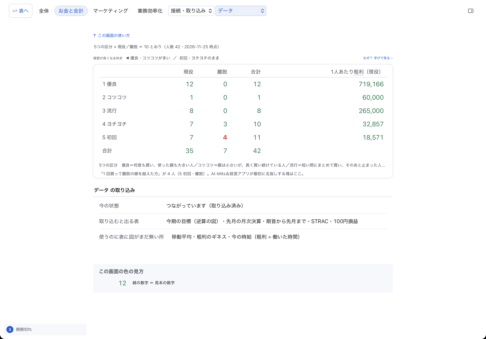
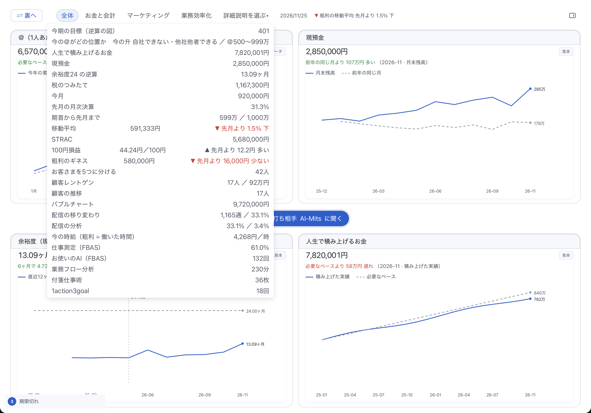
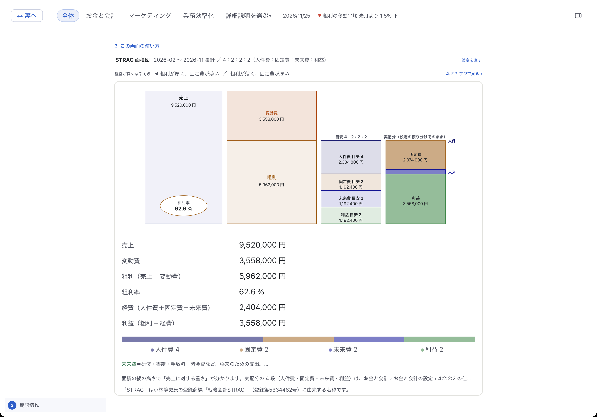

粗利をどう配分するか見られます
STRACでは粗利を人件費・固定費・未来費・利益に分け、会計科目の一覧から配分を考える見方に変えられます。
LPの該当説明から来た方は、ここから機能の一覧をご覧ください。
機能
経営戦略、お金と会計、マーケティング、業務効率化の4つを一つのアプリで見られますので、いま決めたいことから画面を選んでください。
 見本のデータ・版 2.0.5 のヘルプの写真
見本のデータ・版 2.0.5 のヘルプの写真外注を決められないときは、次の3つから始める案です。
画面＝「顧客の推移」を見たあと、「先月の月次決算」で粗利を確かめます。
答え方＝NORMAL
最初の質問「外注の5万円を足すと、いくら残りますか」
外注費をまだ含めていない月の数字を選び、ほかの経費と残したいお金も添えて相談します。
「顧客の推移」と「粗利」は別の表示です。まず上の「マーケティング」→「詳細説明を選ぶ」→「顧客の推移」で取引を見ます。次に上の「お金と会計」→「詳細説明を選ぶ」→「先月の月次決算」で粗利と経費を確かめます。
お金と会計の画面で、上の行の右端にある、右側に縦線のある四角いボタンから相談欄を開きます。答え方はNORMALを選ぶ案です。数字を添える範囲は相談画面上の「▶ 開く いま AI-Mits に渡せる数字はここまでです」で確かめ、数字を添えるスイッチを使います。選択欄との対応は未定です。
帳簿のない自分の相談では数字の添付を切り、確認日付きの残高・入金・支払予定を相談文に書きます。見本（架空の会社）の相談では「見本の数字の相談です」と書き、見本の数字だけを使います。
説明用の確認例：会社＝見本の架空会社／対象月＝説明用の10月／添付する要約＝売上80万円・原価15万円・ほかの経費20万円です。外注費5万円はこれから足す想定です。
違っていたら「送る」を押す前に数字を添えるスイッチを切ります。会社と対象月を選び直して「▶ 開く いま AI-Mits に渡せる数字はここまでです」を開き、要約を確認してから添付を戻す案です。選び直す操作名と要約の表示場所は未定です。合わなければ添付を切ったまま、確認した数字を相談文に書きます。
掲載写真は版2.0.5の別の見本です。写真の対象月や値が上記の80万円・15万円・20万円・5万円に対応することは確認していません。この相談例は写真の実測値を転記したものではありません。
送信前に、会社名・対象月・「見本」の表示・添付の内容を確認し、自分の相談に見本の数字が付いていないことを確かめてから、相談文を入力して「送る」を押します。
画面名の参照：版2.0.5の使い方（AI-Mits・マーケティング・月次決算）。添付する数字を選ぶ操作の詳細は、今後画面と照合する案です。
今の写真は別の想定で、下の説明用の会社・月・数字とは対応していません。
| 順序 | 外注費5万円を考える説明用の例 |
|---|---|
| 画面 | 会社＝見本の架空会社／対象月＝説明用の10月として、「顧客の推移」から「先月の月次決算」を確認します。 |
| 添付 | 未定 添付する要約＝売上80万円・原価15万円・ほかの経費20万円です。外注費5万円はまだ含めません。操作名・要約の表示場所は未定です。 |
| 質問 | 「外注の5万円を足すと、いくら残りますか」と相談する説明例です。 |
| 答え | 開発版 v6 の本物の答えの会話へ。掲載済みの実回答は値上げの相談です。この外注の説明例への実回答ではありません。 |
| 次の行動 | 39回目で添えた「この答えから採れる物／保留する物」を読み、質問として採る物と、判断を保留する物を確かめます。 |
説明用の相談例です。「残高60万円は今月20日に確認しました。外注費5万円は25日、家賃8万円は末日に支払います。30日に生活費20万円と税金10万円を残したいです。確認済みの入金30万円が残高に含まれるかも確かめます。未確認の入金10万円は足さず、追加の外注費を払っても残す条件を守れるか相談したいです。」
支払い後は60万円−5万円−8万円−20万円−10万円＝17万円です。さらに外注費5万円を追加するなら12万円です。他の支払いや入金も確認してから決める説明用の計算で、利益とは別です。
操作例（説明用の案）：資料づくり・依頼・確認に使った開始時刻と終了時刻を、その都度仕事の記録に分けて残します。今月は資料づくり20時間・依頼0時間・確認4時間、翌月は4時間・2時間・6時間と記録し、合計24時間と12時間を比べます。
アプリの入力は上の「⇄ 裏へ」→「業務効率化」→「設定」→「働いた時間（FA・FS・BA・BS）」です。資料作成・依頼・確認の三つは、元の仕事の記録で比べます。FA・FS・BA・BSの月合計は、アプリの図で見ます。
翌月は表の「業務効率化」→「詳細説明を選ぶ」→「仕事測定（FBAS）」で図を開き、推移の「期間を選ぶ」「比べる相手」と対象月を確かめます。資料作成・依頼・確認の三つは、元の仕事の記録で比べます。FA・FS・BA・BSの月合計は、アプリの図で見ます。「未取得」は0時間として扱いません。
帳簿がまだ届いていない月の相談文の見本です。AI-Mitsの実回答ではありません。
今月の通帳の残高は60万円です。明細で確かめられる入金は30万円です。記憶だけの入金が10万円ほどありますが、まだ確認できていません。今後の支払いは、請求書で確かめた外注費5万円と家賃8万円があります。残高に含まれている入金を重ねて足さず、外注を増やす前に何を確かめればよいですか。
たとえば11月の帳簿があとで届いたら、11月へ戻り、実際の売上・費用とこの相談時の入出金を突き合わせます。通帳残高と利益は分けて確かめます。
目指しているのは、①自分の会社の数字が見えること、②その数字で判断が一つできることです。
数字 → 見立て → 打ち手。数字を見て、どういう状態かを考え、次に何をするかをご自分で決めます。
数字を見て相談し、決めたことを振り返る流れを、一人でも続けられるようにしていきます。
| 帳簿が整う前の月 | 帳簿が整ったあとに先月を見直す月 |
|---|---|
| 通帳の残高・確かめられる入金・支払い予定をそろえます。予定と確認済みの数字は分けて書きます。 | 会計ソフトから先月の売上・経費・利益を取り込み、月次決算を開きます。 |
| AI-Mitsに「帳簿はまだ途中です」と伝え、支払いの時期と手元に残すお金を相談します。 | 予定と実績の違いを見て、先月決めた行動を振り返ります。 |
| 確定していない利益を断定せず、いま確かめられることと今月やることを1つ決めます。 | 違った理由を相談し、今月の行動を1つ決めます。帳簿が遅れた月もあとから見直します。 |

長いご案内を読んで気になった機能は、実際の画面の写真でも確かめられます。
何を考え、何を決めるときに使うかを、機能ごとにお伝えします。
画面全体を見たい方は、見本の画面の一覧をご覧ください。
事業の目標を決めるときは、お金や働く時間も合わせて考えたいですよね。
経営戦略、お金と会計、マーケティング、業務効率化の画面を行き来して考えられます。
いま、ご自分の事業で気になるところから使ってください。
表の上には「全体」「お金と会計」「マーケティング」「業務効率化」と「詳細説明を選ぶ」があります。その右に日付があります。
見本のデータ・版 2.0.5 のヘルプの写真目標＠と人数・今期の目標・人生の時間割・戦略の決定・経営カレンダー
必要な粗利と人数を考えながら、今期の目標を決められます。
人生の時間割と経営カレンダーでは、ご自分の時間も事業と一緒に見直せます。
これからどんな事業にしたいかを、日々の判断につなげてください。
 見本のデータ・版 2.0.5 のヘルプの写真
見本のデータ・版 2.0.5 のヘルプの写真今月・先月の月次決算・移動平均・STRAC・100円損益・税のつみたて・4:2:2:2 の仕分け
先月の結果は月次決算で、今月の途中経過は今月の画面で確かめられます。
移動平均で月ごとの変化を、STRACで粗利の配分を比べられます。
税のつみたてや現預金も見ながら、お金の使い方を考えてください。
管理会計は、攻めの経営者のための会計。
アフィリエイトとかだと売れたら払えばいいじゃないですか
同じ広告宣伝費でも、そうすると変動費にするかどうかって、経営者の判断なんですよね
同じ広告宣伝費でも、売れたときに払うアフィリエイトの費用は変動費、売上に関わらず続ける広告の費用は固定費として考えます。
税務会計で広告宣伝費にした費用も、管理会計ではご自分の事業に合わせて分け、利益の計算に使えます。
「配分 4:2:2:2」では、粗利を100として、人件費40・固定費20・未来費20・利益20の配分を考えられます。
粗利率は「マネーフォワードの実績」を使うか、「手で入れる」かを選んでください。
 見本のデータ・版 2.0.5 のヘルプの写真
見本のデータ・版 2.0.5 のヘルプの写真お客さまを5つに分ける・顧客レントゲン・顧客の推移・バブルチャート・ペルソナ設定
お客様を分けて見たり、顧客の推移を見たりして、取引がどう変わったかを確かめられます。
バブルチャートでは、お客様ごとの違いを図で比べられます。
ペルソナ設定も使いながら、誰に何を届けたいかを考えてください。
 見本のデータ・版 2.0.5 のヘルプの写真
見本のデータ・版 2.0.5 のヘルプの写真
上の「詳細説明を選ぶ」を押すと、項目の一覧が開きます。「人生で積み上げるお金」「現預金」「余裕度24 の逆算」「移動平均」「STRAC」などが並び、項目名の右に値が出ます。
見本のデータ・版 2.0.5 のヘルプの写真お使いのAI（FBAS）
仕事測定で、何に時間を使っているかを確かめられます。
業務フロー分析では、仕事の流れのどこを変えるか考えられます。
AIの利用状況も見ながら、任せる仕事と自分でする仕事を見直してください。
マネーフォワード・freee・Stripe・UTAGE・CSV
会計の数字のほか、決済、販売、お客様との取引の情報も取り込むための機能があります。
お使いのサービスに合わせて、接続かCSV取り込みを選んでください。
内容を確かめながら、見本からご自分の事業の数字へ切り替えていけます。

見本の会社の画面を見る →図や数字がどう見えるかを、見本の画面でご紹介します。
文章で分かりにくいところも、写真と一緒に見られます。
気になる分野を開いて、ご自分なら何を見たいか考えてみてください。
→ 行き先：WEB版（外のページ）
見本の数字で触ってみる 未定オプトインの前に置くか後ろに回すかは未定（FHL 2026 Notes の案は後ろ）STRACでは粗利を人件費・固定費・未来費・利益に分け、会計科目の一覧から配分を考える見方に変えられます。
移動平均では3か月・6か月・12か月の平均を比べ、1か月の増減と長く続く傾向を分けて考えられます。
100円損益で、100円稼ぐのに使った額を並べ、外注や経費を変えた前後を比べられます。
税のつみたてで税のためによける額と残る額を見て、手元の残高やこれからの支払いと合わせて考えられます。
ダッシュボード版では全体を見たあと、経営戦略・お金と会計・マーケティング・業務効率化から詳しい数字へ進む構成を検討しています。
数字を見る画面と、目標・分類・接続を変える画面も整理し、目的の情報を探しやすくする案です。
ここは開発案ですので、現在の画面は見本の写真でご覧ください。
UTAGEの紹介ページと版1.77の使い方に載せた画面をご覧いただけますので、写真ごとの版や出典も合わせてご確認ください。

お金・分析の STRAC 面積図。売上・変動費・粗利・固定費・利益の関係を、面積で見ます。どこを動かすと利益が出るかが目で分かります。

学びの「戦略」。商品をどこに置くか、我が社は棚のどこに並ぶか。数字ではなく、打ち手の側を並べる画面です。

顧客レントゲン。数字と日付は伏せています

ペルソナの箱。AI-Mits とペルソナ設定をする・新しく作る（空欄で）・既存の .md を取り込む・選んだペルソナを配る…のボタン

見張りは、月次決算・今月の画面の頭にある（この数字の変化を見張る）＋ この数字の変化を見張るから登録します。

UTAGE 売上一覧 CSV の取り込み

版1.80.0の使い方の案内に載せた写真で、操作や表示を見比べていただけます。

版1.80.0の使い方の案内に載せた写真で、操作や表示を見比べていただけます。
| 元の記録1行（説明用） | 分類と月合計への加え方 |
|---|---|
| 10月7日 10:00〜11:00／顧客向け資料1本の作成／1時間／FS | この例は顧客へ提供する資料なのでFSに1時間を足します。同じ月の全記録も仕事の目的で分類し、FA・FS・BA・BSそれぞれを合計します。 |
分類の例：提案・販売の資料ならFA、顧客へ提供する資料ならFS、事業の改善計画ならBA、社内の事務資料ならBSです。資料という名前だけで分類を固定しません。
| 時期 | 確認すること |
|---|---|
| 最初の月 | 作業名・開始終了・目的・分類を記録し、同じ月の四分類の合計を入力する案です。未取得を0にしません。 |
| 翌月 | 資料づくり・依頼・確認を元の記録で比べ、四分類の合計と図の対象月・比較相手を照らす案です。所要時間は未計測です。 |
依頼と確認も残す説明用の例です。同じ資料1本について、10月7日10:00〜11:00は資料作成1時間、11:00〜11:15は依頼15分、10月8日10:00〜10:15は確認15分として別々に記録します。顧客への提供が目的なら各記録をFSに分類し、合計1時間30分だけを月合計へ足します。資料1本というまとまりでもう一度足しません。